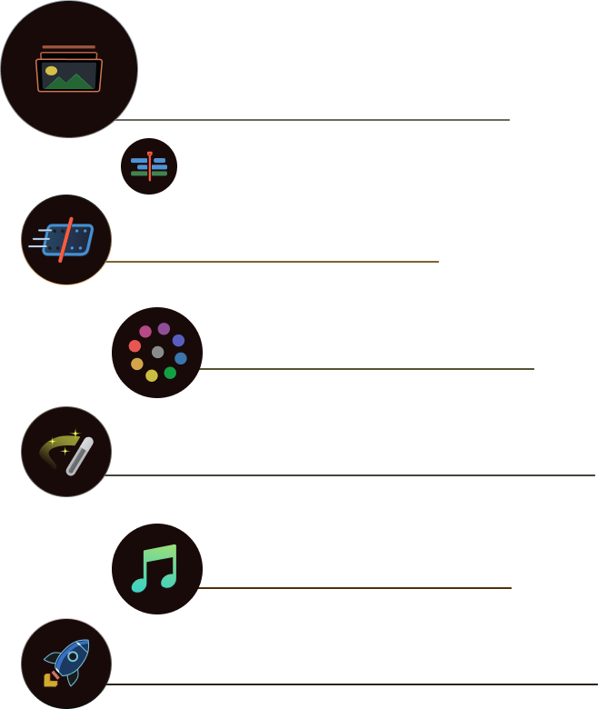

32비트 부동 이미지 처리 기술과
특허받은 YRGB 컬러 사이언스
최신 HDR 워크플로를 위한 광범위한 색공간
전문 컬러리스트, 편집자, 시각 효과 아티스트, 음향 기술자 등
전문가들이 매일 사용하는 도구를 사용하여
영화 작업을 마무리하고
TV 프로그램을 스트리밍해보세요.
32비트 부동 이미지 처리 기술과
특허받은 YRGB 컬러 사이언스
최신 HDR 워크플로를 위한 광범위한 색공간
전문 컬러리스트, 편집자, 시각 효과 아티스트, 음향 기술자 등
전문가들이 매일 사용하는 도구를 사용하여
영화 작업을 마무리하고
TV 프로그램을 스트리밍해보세요.

DaVinci Resolve 19은 Blackmagic Cloud를 지원하기 때문에
클라우드에서 프로젝트 라이브러리를 DaVinci Resolve Project Server로
호스팅할 수 있습니다. 프로젝트를 공유하며 전 세계 모든 편집자,
컬러리스트, VFX 아티스트, 음향 엔지니어와 동시에
동일한 프로젝트에 접속해 협업할 수 있습니다.
Blackmagic Cloud 웹사이트를 사용하여
전 세계 어디서나 프로젝트를 호스팅 및 접속할 수 있습니다.
이제 편집자, 컬러리스트, 시각 효과 아티스트, 음향 엔지니어들과
동시에 협업할 수 있게 되었습니다.
무엇보다도 파일 불러오기 및 보내기,
프로젝트 변환, 변경 사항 컨폼 및 관리를 하지 않아도 되며
작업이 손실될 염려도 없습니다.


전 세계에서 가장 빠른 속도를 지원하는 최첨단 전문 NLE
DaVinci Resolve의 편집 페이지는 전 세계 최첨단의 전문 비선형 편집 에디터입니다.
친숙한 트랙 레이아웃과 듀얼 모니터 디자인, 기존에 사용하던 워크플로를 탑재해
초보 사용자들도 손쉽게 배울 수 있으며, 전문 편집자가 필요로 하는 강력한 기능도 제공합니다.
작업 회전율이 빠른 편집자를 위한 페이지
컷 페이지의 인터페이스는 매우 간소화되어 신속하게
사용법을 익힐 수 있으며 작업 속도도 빠릅니다.
동기화 빈과 소스 덮어쓰기 도구를 사용해
멀티캠 프로그램을 신속하게 편집할 수 있습니다.
이는 다큐멘터리와 라이브 방송 편집 및
리플레이 작업에 사용하기도 좋습니다.
할리우드에서 가장 선호하는 컬러 커렉터
다른 어떤 시스템보다 더 많은 첨단 장편 영화 및 TV 프로그램의 색보정 및 피니싱 작업에 사용되고
있습니다. 또한 새로운 사용자들이 첨단 도구 사용법을 배우는 동시에 훌륭한 결과물을 손쉽게
얻을 수 있도록 돕는 기능도 제공됩니다.
컬러 페이지는 파워 윈도우와 퀄리파이어, 트래킹, 첨단 HDR 색보정 도구 등의
광범위한 프라이머리 및 세컨더리 색보정 기능을 제공합니다.

시네마틱한 시각 효과 및 모션 그래픽
Blackmagic Cloud 웹사이트를 사용하여
전 세계 어디서나 프로젝트를 호스팅 및 접속할 수 있습니다.
이제 편집자, 컬러리스트, 시각 효과 아티스트, 음향 엔지니어들과
동시에 협업할 수 있게 되었습니다.
무엇보다도 파일 불러오기 및 보내기
프로젝트 변환, 변경 사항 컨폼 및 관리를 하지 않아도 되며
작업이 손실될 염려도 없습니다.
오디오 후반 제작을 위해 설계된 전문 도구
Fairlight Audio Core는 한 번에 최대 2,000개의 트랙을
실시간 효과, EQ, 다이내믹스 프로세싱과 함께 작업할 수 있습니다.
고도의 정밀 편집 도구와 첨단 ADR 및 효과음, 그리고 리버브,
디에서, 험 노이즈 제거 등의 Fairlight FX까지 지원됩니다.
최고의 창작 도구는 할리우드용으로만 국한되어서는 안 됩니다.
이 점이 바로 DaVinci Resolve 무료 버전이 제공되는 이유이며,
이를 통해 전문 할리우드 아티스트가 사용하는 바로 그 도구의 사용법을 익힐 수 있습니다.
DaVinci Resolve는 창의적인 영감을 제공할 수 있도록 설계되어
사용자가 최고의 결과물을 만드는 데 주력할 수 있도록 도와드립니다.
DaVinci Resolve는 편집 및 색상, VFX, 모션 그래픽 및 오디오
제작을 위한 세계 유일의 통합 솔루션입니다. 무료 버전은 최대 60fps의
UHD 3840x 2160 해상도에 이르는, 사실상 모든 8비트 비디오 포맷을 지원합니다.
무료 버전에서 다중 사용자 협업 및 HDR 그레이딩 또한 사용할 수 있습니다.
무료 버전에서 제공하는 모든 기능뿐만 아니라,
DaVinci 뉴럴 엔진 및 부가적인 수십 가지의 ResolveFX, AI 시간적/공간적 노이즈 리덕션,
텍스트 기반 편집 기능, 매직 마스크, 필름 그레인, 광학 블러 등을 추가로 지원합니다.
또한 최대 120 fps 및 4K 이상 해상도의 10비트 비디오를 지원합니다.